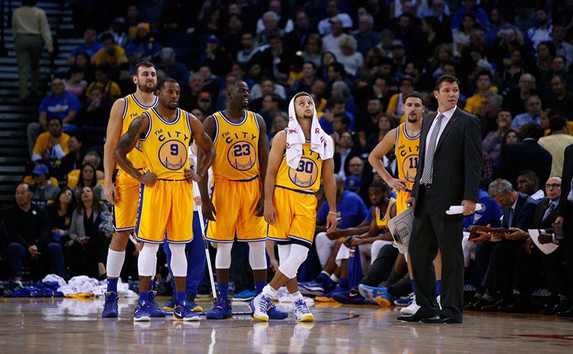

Historia dos Golden States
A história dos Warriors começou na Filadélfia em 1946. Em 1962, a equipa foi transferida para San Francisco, Califórnia e tornou-se conhecida como "San Francisco Warriors" até 1971, quando seu nome foi alterado para o atual "Golden State Warriors".
